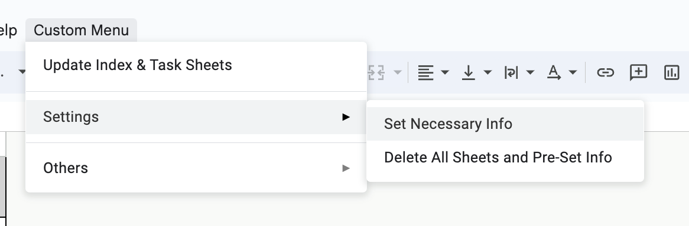
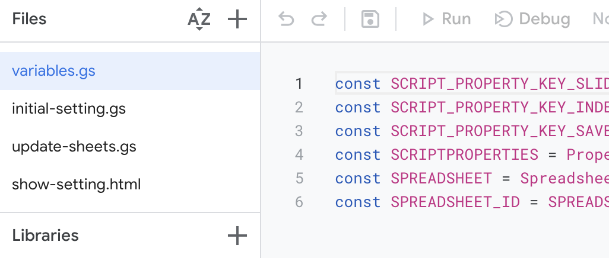
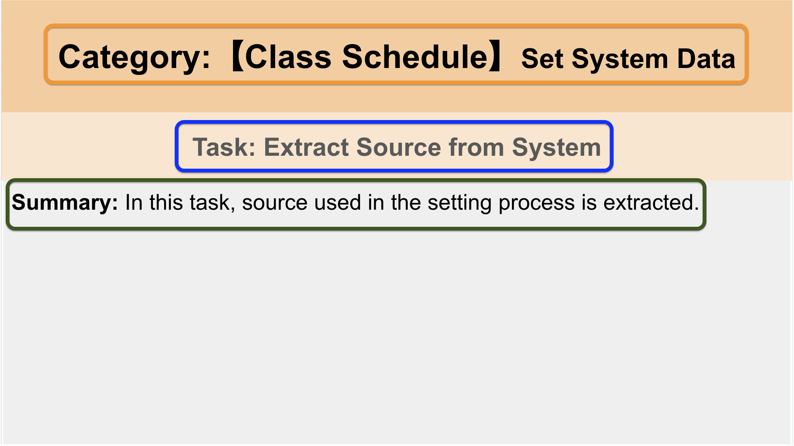
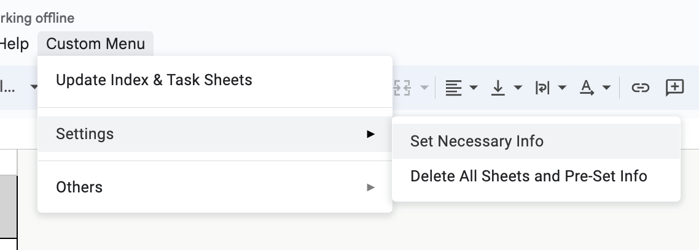
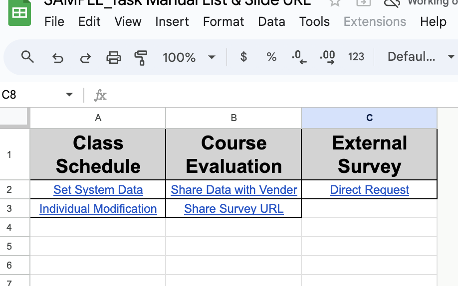
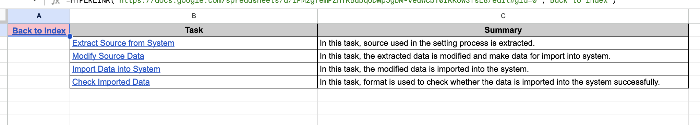

<div class="content">
    <div class="container py-4">
        <h1 id="top" class="mb-4">About this Project</h1>
        <p>Unleash the power of automation with this Google Apps Script project! Seamlessly integrating Google Sheets and Slides, it empowers users to organize Slide Information (Category, Subcategory, Task, Slide URL) in a structured manner. <strong>Transform your work manual creation process into an efficient, streamlined workflow with Google Apps.</strong> Experience the epitome of efficiency and bid goodbye to tedious tasks.</p>
        <ul>
            <li>Integration with Google Sheets and Google Slides.</li>
            <li>Custom menu for easy access to script functionalities.</li>
            <li>Dynamic update of task sheets based on slide information.</li>
        </ul>

        <h2 id="prerequisites" class="mt-4">Prerequisites</h2>
        <ul>
            <li>A Google account with access to Google Sheets and Slides.</li>
            <li>A foundational understanding of Google Sheets and Google Apps Script.</li>
            <li>The ability to execute step-by-step setup instructions.</li>
        </ul>

        <h2 id="setup" class="mt-4">Setup</h2>
        <ol>
            <li>
                <strong>Access Your Google Sheet</strong>: Begin by opening the <a href="https://docs.google.com/spreadsheets/d/1PMzgfemPZhTKBubqUDWp5gbM-veuWCbT0IKKOw3fsL8/edit#gid=0" target="_blank" rel="noopener noreferrer">Sample Google Sheet</a>. You can also find the <a href="https://docs.google.com/presentation/d/1pUxDKtwHA4GMXfmGXmwzXnjuAbW9g6DE9lFTj55wAn8/edit#slide=id.g2aa00057ea4_0_0" target="_blank" rel="noopener noreferrer">Sample Google Slide</a>.
                <p> *Note: Category and tasks described in the sample slides are for work manual at education institution.</p>
            </li>
            <li>
                <strong>Copy the Sheet</strong>: Make a copy of the Google Sheet to create your personalized version.
            </li>
            <li>
                <strong>GAS Authorization</strong>: Navigate to the 'Custom Menu' > 'Others' and click the 'Conduct Authorization' button to start the Google Apps Script authorization process.
            </li>
            <li>
                <strong>Return to Original Format</strong>: Use this option to reset the spreadsheet to its original format (i.e., Delete all of the sample sheets except index sheet, reset all pre-defined info, and clear contents in index sheet). Navigate to 'Custom Menu' > 'Setting' and click 'Delete All Sheets and Pre-Set Info'.
                <div class="row">
                  <div class="col-12">
                    <!-- Placeholder for Settings Modal Image -->
                    <figure class="resize-image my-3">
                      
                      <figcaption>Fig: Settings Modal</figcaption>
                    </figure>
                  </div>
                </div>
            </li>
            <li>
                <strong>Set Slide URL and Name of Index Sheet</strong>: Navigate to 'Custom Menu' > 'Setting' and click 'Set Necessary Info' designating URL of Google Slide and name of the index sheet of Google Spreadsheet.
            </li>
            <li>
                <strong>Customize Constants (Optional)</strong>: Navigate to Apps Script edit page and modify constants in `variables.gs` to meet specific requirements.
                <div class="resize-image my-3 container-img">
                    <!-- Placeholder for Customizing Constants Image -->
                    
                    <div class="image-caption">Figure: Customizing Constants</div>
                </div>
            </li>
        </ol>

        <section id="usage" class="mt-4">
          <h2>Project Usage</h2>
          <p>Our workflow is designed with user efficiency in mind. Here's how it works:</p>

          <ol>
            <li>
              <p>Users are required to create slides in a designated Google Slide following a specific pattern. The first slide of each section should adhere to the following structure:</p>
              <blockquote>
                Category:【Category Name】<br>
                Subcategory Name<br>
                Task: Task Name<br>
                Summary: Summary Descriptions
              </blockquote>
              <div class="resize-image my-3 container-img">
                
                <div class="image-caption">Figure: Designated Slide Structure</div>
              </div>
              <p>This structure is considered to be the first slide of the section. The script stores the information and its URL, which are later displayed in detail in the Spreadsheet using a specific function.</p>
            </li>

            <li>
              <p><strong>Update Index & Task Sheets</strong>: Navigate to 'Custom Menu' > 'Update Index & Task Sheets'. This action automatically updates the index and task sheets based on the latest slide data.</p>
              <p>The following information is explained in details in <a href="https://docs.google.com/presentation/d/1xSyIpb7w24os4EEhpNBP5CCTxS70q5PeTGKm2Vndumw/edit#slide=id.g6f52a3fb7eed7995_31" target="_blank" rel="noopener noreferrer"></a>HERE</a>
              <ol>
                <ul>Variables to store slide data at each level</ul>
                <ul>Logics to extract slide data and update task sheets</ul>
              </ol>
            </li>
            <div class="row">
              <div class="col-md-4">
                <figure class="resize-image my-3">
                  
                  <figcaption>Figure: Update Button</figcaption>
                </figure>
              </div>
              <div class="col-md-4">  
                <figure class="resize-image my-3">
                  
                  <figcaption>Figure: Updates in Index Sheet</figcaption>
                </figure>
              </div>
              <div class="col-md-4">
                <figure class="resize-image my-3">
                  
                  <figcaption>Figure: Updates in Task Sheet</figcaption>
                </figure>
              </div>
            </div>

  
          </ol>
        </section>
        
        <h2 id="others" class="mt-4">Others</h2>
        <ul>
            <li>Customize the scripts to align with your specific workflow and requirements.</li>
        </ul>
    </div>
</div>
